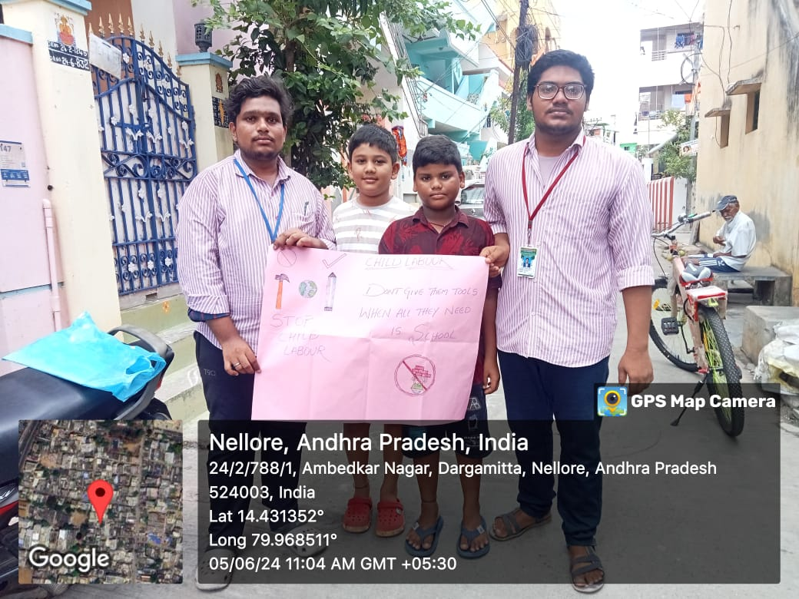
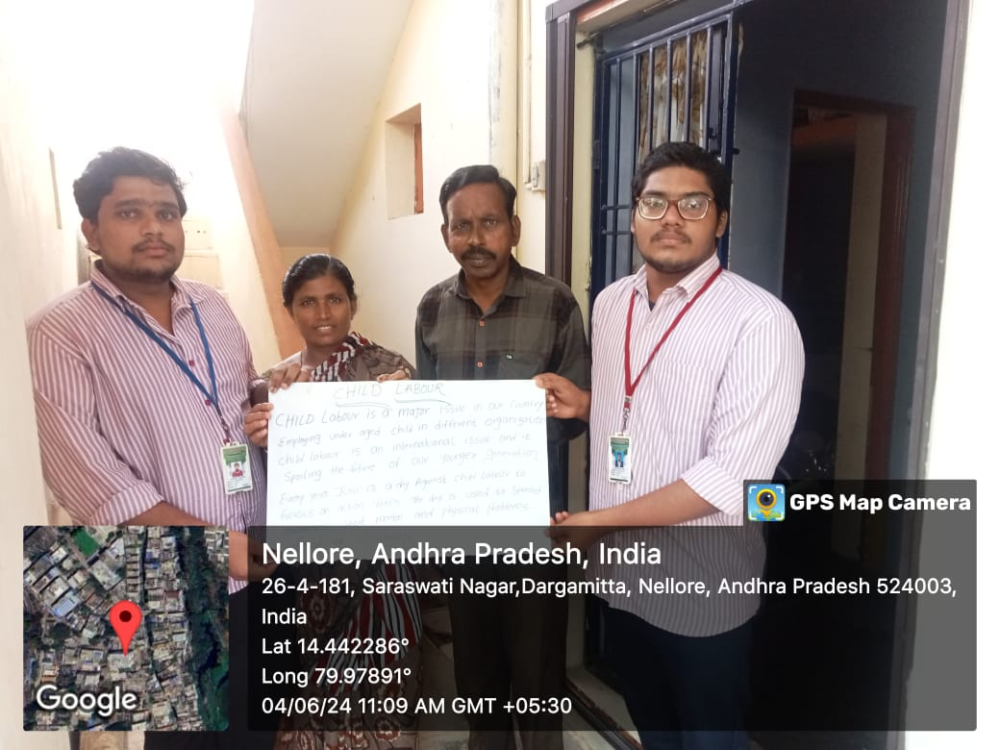
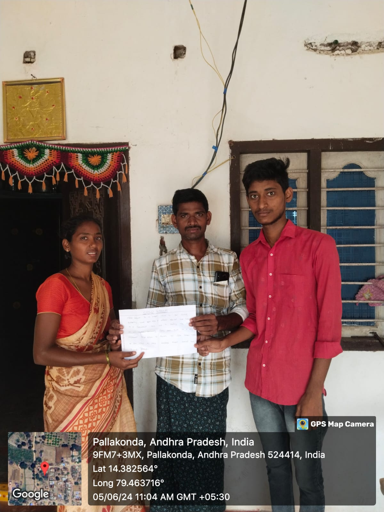
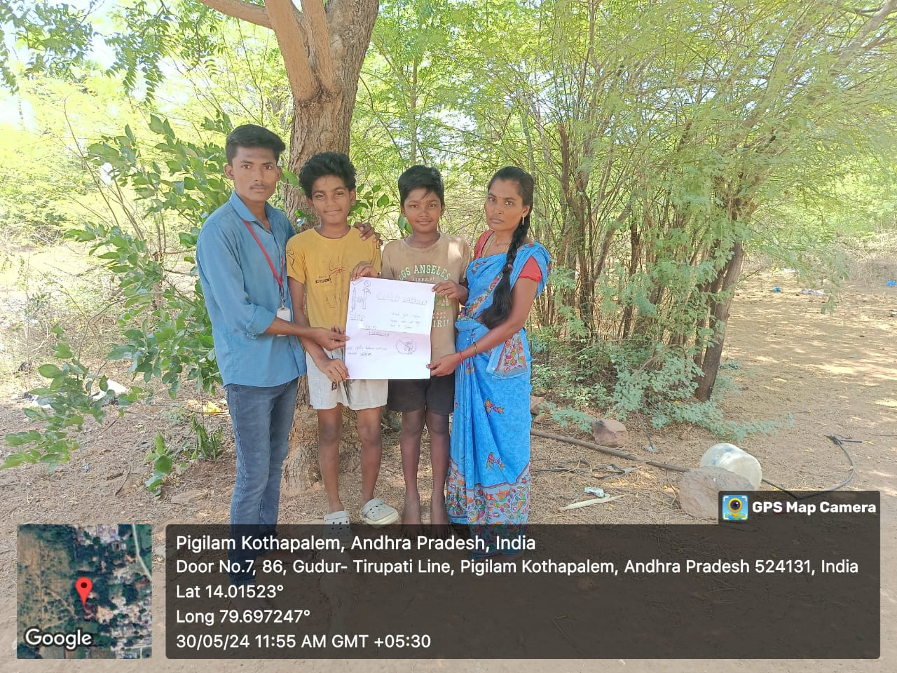

Awareness of child labour.
DAY-1: In the fourth week, we went to rural areas and encouraged the children to get an education.
DAY-2: On this day, we discussed the benefits of child education:
DAY-3: We continued discussing the benefits of child education in society and explained its importance.
DAY-4: We raised some questions about the child labour problem. Agriculture in India is the largest sector where many children work at early ages to help support their families. Many of these children are forced to work at young ages due to several family factors such as unemployment, large families, poverty, and lack of parental education.
DAY-5: We explained the impacts of child labour and gathered information about how many children are going to school and how many are not. Women shared their problems and conditions.
DAY-6: Based on our survey and the information gathered, we found that some children are not going to school and many people don’t know about government schemes provided for the children. We observed that many people are not aware of the impacts of child labour.
   